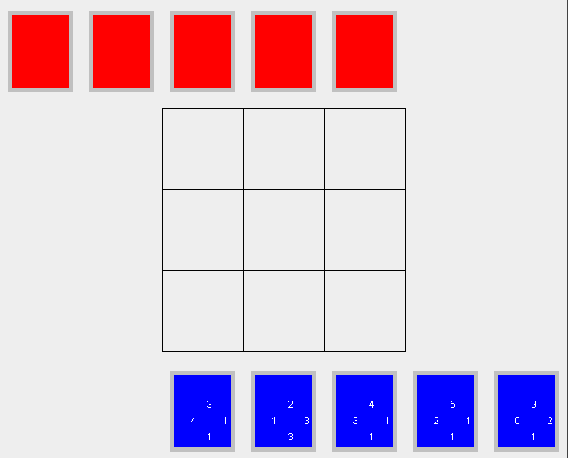
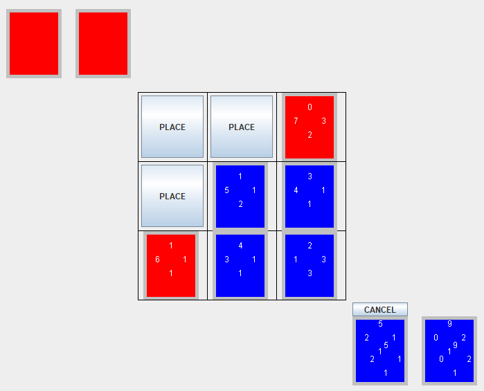
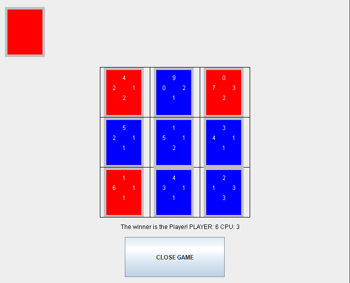

A recreation of the minigame featured many times throughout the Final Fantasy series of games, done for ICS 111.
The game is played on a 3 x 3 board, and players take turns placing down cards, which have a number assigned to each edge.
When a card is placed down, if it is touching another card, and the number on the touching side is higher than that of a card already on the board, then the card on the board gets owned by the player.

Once the board is full, whoever has the most cards wins the game.

In recreating this minigame, I learned that the mechanics of the game are much more complicated than they seem. It took a lot of effort to figure out how to recreate even just the basic version of the game, not accounting for the additional rulesets which exist.
Source Code: github.com/KurtKimura02/triple-triad-remake